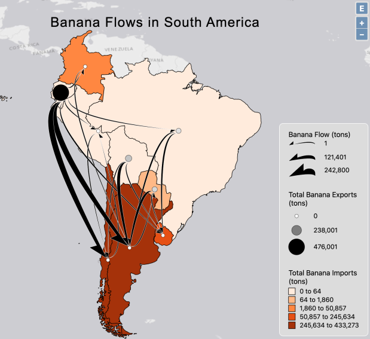

The places which attract the most flows are Uruguay, Argentina, and Chile. Argentina
and Chile have the highest amount of imports in terms of tons, however, they don’t have the
most flows (or diversity of flows) compared to Uruguay. This essentially means that Uruguay has
bananas coming in from many different places, but to a lesser volume, when compared to
Chile/Argentina. By far, Bolivia sends the most flows, both in terms of the number of countries
sent to, and in terms of the total volume of exports. This can be seen by counting the lines
coming from the Bolivia node which don’t have arrows on it. The vast majority of the flow of
Bananas is north to south, as seen by the directions of the arrows. There is a little bit going
south to north, but it is outnumbered both in number of flows and in the volume of the north to
south flows. Due to the overall “skinny” nature of the geographic location being visualized,
there are not many lateral flows that go east-west or west-east. It must be remembered though
that the location of the nods is entirely arbitrary. If the node for Brazil was placed all the way on
the east coast of the country, it would seem there is a lot more lateral movement compared to
what is seen now. The overall pattern seen is countries which have a lot of imports (arrows
towards it), will have this visualized with a darker color in the choropleth base map. The inverse
is also seen, as the countries that export a lot of bananas (arrows away from it), have a lighter
color. This tracks logically as if you export a lot of bananas, you probably already have enough in
your country that there is little to no need to import them.
Downlad Flow Map json
{kind=link}